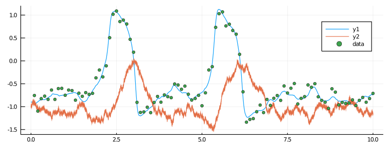
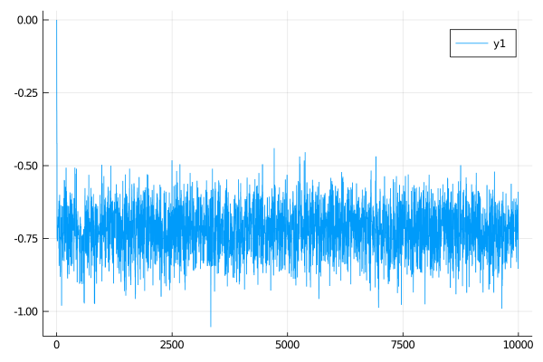

Parameter inference on the example of FitzHugh-Nagumo model
In this tutorial we will explain how to perform Bayesian inference via MCMC sampling with GuidedProposals.jl on the example of the FitzHugh-Nagumo model. We will write a Metropolis-within-Gibbs algorithm that alternately imputes the unobserved path and updates unknown parameter. We will conduct inference for a single parameter, but it will be clear how to extend this tutorial to multiple parameters.
Introduction
Prerequisites
using GuidedProposals, DiffusionDefinition, ObservationSchemes
const GP = GuidedProposals
const DD = DiffusionDefinition
const OBS = ObservationSchemes
using StaticArrays, Random, PlotsData generation
@load_diffusion FitzHughNagumo
# generate some data
θ = [0.1, -0.8, 1.5, 0.0, 0.3]
P = FitzHughNagumo(θ...)
tt, y1 = 0.0:0.0001:10.0, @SVector [-0.9, -1.0]
X = rand(P, tt, y1)
data = map(
x->(x[1], x[2][1] + 0.1randn()),
collect(zip(X.t, X.x))[1:1000:end]
)[2:end]
#TODO introduce data collection in `ObservationSchemes.jl` with `ObsScheme()` object# let's examine the data
plot(X, Val(:vs_time), size=(800, 300))
scatter!(map(x->x[1], data), map(x->x[2], data), label="data")
Data preparation
# let's prepare the data
recording = (
P = FitzHughNagumo([0.1, #==# 0.0 #==#, 1.5, 0.0, 0.3]...),
obs = load_data(
ObsScheme(
LinearGsnObs(
0.0, (@SVector [0.0]);
L=(@SMatrix [1.0 0.0]), Σ=(@SMatrix [0.01])
)
),
data
),
t0 = 0.0,
x0_prior = KnownStartingPt(y1),
)Inference algorithm
# define a simple transition kernel
function customkernel(θ, s::Symbol, scale=0.1)
θ° = deepcopy(θ)
θ°[s] += 2.0*scale*(rand()-0.5)
θ°
end
# and define a function that does the inference
function simple_inference(AuxLaw, recording, dt, θ; ρ=0.5, num_steps=10^4)
# initializations
tts = OBS.setup_time_grids(recording, dt)
ρρ = [ρ for _ in tts]
PP = build_guid_prop(AuxLaw, recording, tts)
PP° = deepcopy(PP)
y1 = rand(recording.x0_prior) # just returns the starting point
XX, WW, Wnr = rand(PP, y1)
XX°, WW° = trajectory(PP)
ll = loglikhd(PP, XX)
paths = []
θθ = Float64[θ[:s],]
imp_a_r = 0
param_a_r = 0
# MCMC
for i in 1:num_steps
# impute a path
_, ll° = rand!(PP, XX°, WW°, WW, ρρ, Val(:ll), y1; Wnr=Wnr)
if rand() < exp(ll°-ll)
XX, WW, XX°, WW° = XX°, WW°, XX, WW
ll = ll°
imp_a_r += 1
end
# update parameter s
θ° = customkernel(θ, :s, 0.3)
DD.set_parameters!(PP°, θ°)
recompute_guiding_term!(PP°)
_, ll° = GP.solve_and_ll!(XX°, WW, PP°, y1)
if rand() < exp(ll°-ll) # uniform updates have no contribution to ll
XX, PP, θ, XX°, PP°, θ° = XX°, PP°, θ°, XX, PP, θ
ll = ll°
param_a_r += 1
end
append!(θθ, [θ[:s]])
# progress message
if i % 100 == 0
println(
"$i. ll=$ll, s=$(θ[:s]), imp accpt rate: $(imp_a_r/100), ",
"updt accpt rate: $(param_a_r/100)"
)
imp_a_r = param_a_r = 0
end
# save intermediate path for plotting
i % 400 == 0 && append!(paths, [deepcopy(XX)])
end
paths, θθ
endPerforming inference
@load_diffusion FitzHughNagumoAux
# let's declare which parameters are not changing
DD.const_parameter_names(::Type{<:FitzHughNagumo}) = (:ϵ, :γ, :β, :σ)
DD.const_parameter_names(::Type{<:FitzHughNagumoAux}) = (:ϵ, :γ, :β, :σ, :t0, :T, :vT, :xT)
# and do the inference
paths, θθ = simple_inference(
FitzHughNagumoAux, recording, 0.001, Dict(:s=>0.0); ρ=0.96, num_steps=10^4
)It takes about 45sec on my laptop...
Examining the results
plot(θθ)
p = plot(size=(1400, 800))
for path in paths[end-10:end]
for i in eachindex(path)
plot!(p, path[i], Val(:vs_time), alpha=0.4, label="", color=["red" "steelblue"])
end
end
scatter!(p, map(x->x[1], data), map(x->x[2], data), label="data")
display(p)
Adjusting the code presented in this tutorial to other diffusion processes, observation schemes or flavors of MCMC algorithm should be fairly straightforward, albeit can become tedious. Package DiffusionMCMC.jl (currently under development) has been designed precisely with this in mind and aims to remove the unnecessary, tedious work from the user when performing MCMC inference.